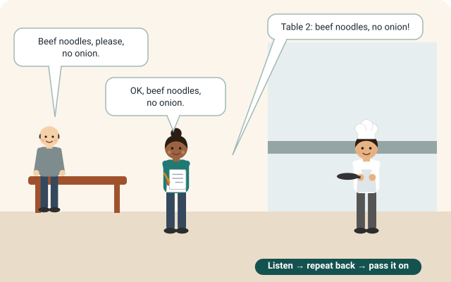
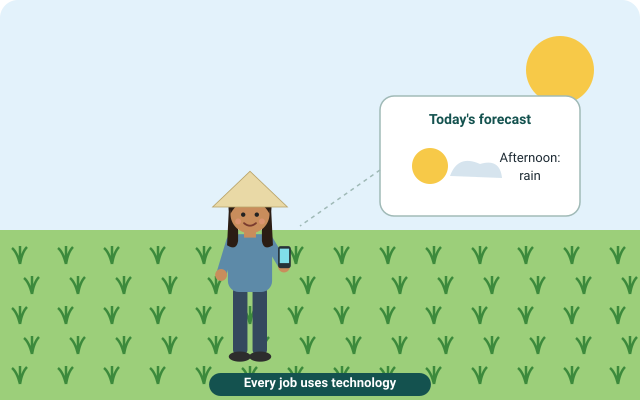
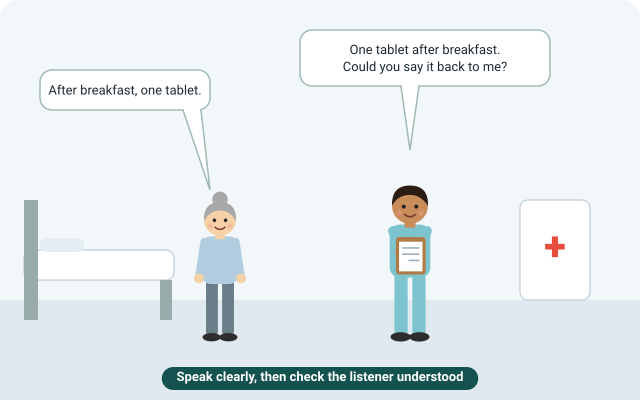

K7 · Self-directed learning and career development › Level 1 Exploring
Every job needs skills
For the adult. This lesson links jobs to skills. The child uses the Job cards from Lesson 1 again.
- You need: the child's Job cards, and 6 small slips of paper with the 6 skills from Diagram 1 (the "skill cards").
- Ages 6–8: the first 3 skills are enough. Older children: use all 6.
- Each skill has its own page on the site, under Skills. You can read it to explain more.
1. Objectives
- Say that a job needs at least 2 work skills, with an example of a task that uses each one.
- Name one technology that a familiar job uses.
2. Retrieval warm-up
- How many boxes does a Job card have? Name them.
- What are the 4 steps of job hunting?
Answers
- 5 boxes: job name, what they do, where, what they use, what skills.
- Look, guess, ask, write.
Review: Jobs around you.
3. Explanation
Every job needs its own knowledge. A cook knows how to make dishes. A nurse knows about medicines. An electrician knows about wires.
But some work skills are needed in every job. They are about how you work with other people and with the task. Remember these 6 skills that are easy to spot:
6 skills every job needs

Look at Figure 1. The waitress uses at least 3 skills. She listens to the order. She speaks clearly to the kitchen. She and the cook work together so the customer gets the right bowl of noodles.
Every job uses technology. Technology means machines and software that help people work better. A farmer may check the weather forecast on a phone. A shop assistant uses a till. Technology is not only found in offices.

4. Workplace example
Hypothetical scenario. Max (age 9) visits his grandma in hospital. He sees a male nurse telling Grandma how to take her medicine.

At home, Max and his mum play "skills detectives". They pick each small task the nurse does:
| Small task | Skills needed |
|---|---|
| Tells Grandma about her medicine, asks her to say it back | Speaking clearly, listening |
| Writes the medicine time in a chart or on a computer | Using technology, keeping promises |
| Tells the doctor when Grandma feels unwell | Working together, solving problems |
Max fills in box 5 of his "Nurse" card: speaking clearly, listening, working together.
Why this works: Max does not guess skills in general. He starts from a specific small task and finds the skill. This shows you how skills are really used.
Did you notice? The nurse is a man. Lesson 3 explains why this is completely normal.
5. Practice
Take a Job card you made in Lesson 1. Be a skills detective using the diagram below. Fill in box 5: at least 2 skills, each with a small task as an example.
Skills detective in 4 steps
- Choose a small taskTake one task from the "What do they do?" box.
- Ask"What do you need to be able to do for this task?"
- Name itChoose a skill from the 6 skill cards.
- Fill in box 5Write the skill with an example task.
Hint 1
Start from the "What do they do?" box. Each small task usually needs one or two skills.
Hint 2
Ask more: does this job involve talking to customers? Are there set times? Does it use machines?
Model answer (Motorbike mechanic card)
- Listening: hearing the customer describe what is wrong with the bike.
- Solving problems: finding out why the bike will not start.
- Keeping promises: if the customer is told to collect it at 5, it must be fixed by then.
- Using technology: an air pump, a bike-washing machine.
Extra game: Guess the job. The adult names 2 skills and 1 tool. You guess the job. For example: "Listening, keeping promises, using scissors and a tape measure." The answer could be a tailor. Then swap: you make the riddle.
6. Self-check
Choose an answer. Every option has an explanation.
Question 1. The nurse asks Grandma: "Could you say it back to me?" Which skill is he using?
-
Correct. Correct. Asking her to say it back tells him Grandma understood how to take her medicine.
-
Not quite. He is not using a machine for this task.
-
Not quite. This task is about speaking and listening, not about a set time.
Question 2. The farmer checks the weather forecast on her phone before going to the fields. What does this show?
-
Not quite. This example shows the opposite.
-
Correct. Correct. Technology helps people in every kind of job work better.
-
Not quite. Every job needs skills, farming too.
Question 3. Which of these is a work skill that every job needs?
-
Not quite. This is knowledge for cooking jobs only.
-
Correct. Correct. Tailors, mechanics, teachers… all need to keep promises.
-
Not quite. This is knowledge for health jobs only.
Question 4. Review of Lesson 1. For a teacher, what goes in the "Where?" box?
-
Not quite. This is what they do, so it fits the "What do they do?" box.
-
Correct. Correct. The "Where?" box is for the place of work.
-
Not quite. These are tools, so they fit the "What do they use?" box.
7. Reflection
The adult asks, and you answer out loud. The site saves nothing.
- Which skill did you see in the most jobs?
- At school, which of these 6 skills are you using?
8. Real-world application
Over the next 7 days, ask an adult at home: "What technology do you use in your work?" Fill in box 5 on all the Job cards you have.
Connecting ideas. These six skills will come back. Lesson 3 uses them to break stereotypes. Lesson 4 practises working together. Lesson 5 practises listening and keeping promises. In Lesson 6, you ask a working person to check your box 5.
When you are older, you can assess yourself on all 10 skills on the Self-assessment page.
9. Metadata
| skill | K7 · Self-directed learning and career development |
|---|---|
| level | Level 1 · Exploring |
| group | N1 |
| framework_map | WEF: Curiosity and lifelong learning; CSfW: 1a Manage career and work life; 3e Work in a digital world; NACE: Career and Self-Development; LifeComp: L3 Managing learning (reference only) |
| original | Vietnamese version |
| updated | 2026-11-14 |
Finish the lesson
Mark it as done and the site suggests reviews after 1, 3 and 7 days. The data stays on your device only.
Suggested reviews: